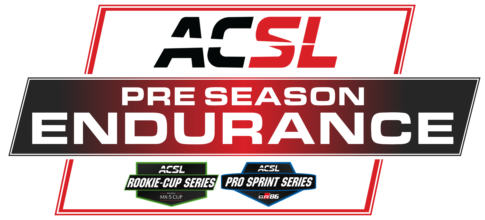

RETURN of the Ka!
Our traditional Ford Ka race makes its third appearance now!
The first ever Ka race was at Nordschleife, then Bathurst and now.... Mallory ?
Believe it or not this niche circuit has some crazy battle opportunities and it's unique layout does require a bit of skill to get right, especially in a car that relies on momentum.
Server for this event will open around Thursday 15/01 since we think the 6 Hours of Green Hell is more important. STILL, we expect a nice clean and fun race for this special ACSL event that marks a tradition of the league. There are 34 gridspots open but only sign up once you 100% know you can participate. If you sign up and don't attend you risk penalties for other upcoming events (even for seasonal events).
We will do a Blitz Qualifying of only 5 minutes followed up by a little Sprintdurance of 50 minutes with a rolling start. 1 Pitstop is mandatory and you can do what you want in pits. You don't have to change anything theoretically.
We will allow people to compete in goofy liveries as they wish, only that they need to be appropriate for media purposes.

On January 24, a special pre-season endurance race will take place on the legendary Nürburgring Nordschleife – 24h
layout. This six-hour event is designed to give drivers and teams the opportunity to prepare for the upcoming season
in a competitive environment, testing endurance, consistency, and race strategy on one of the most demanding
circuits in the world. The race will feature two distinct classes, the Mazda MX-5 Cup and the Toyota GR86, ensuring
close battles and diverse racing action throughout the field. With its long format and challenging track, this
pre-season race promises an exciting showcase of skill and determination, offering participants the perfect chance
to sharpen their performance ahead of the official season.